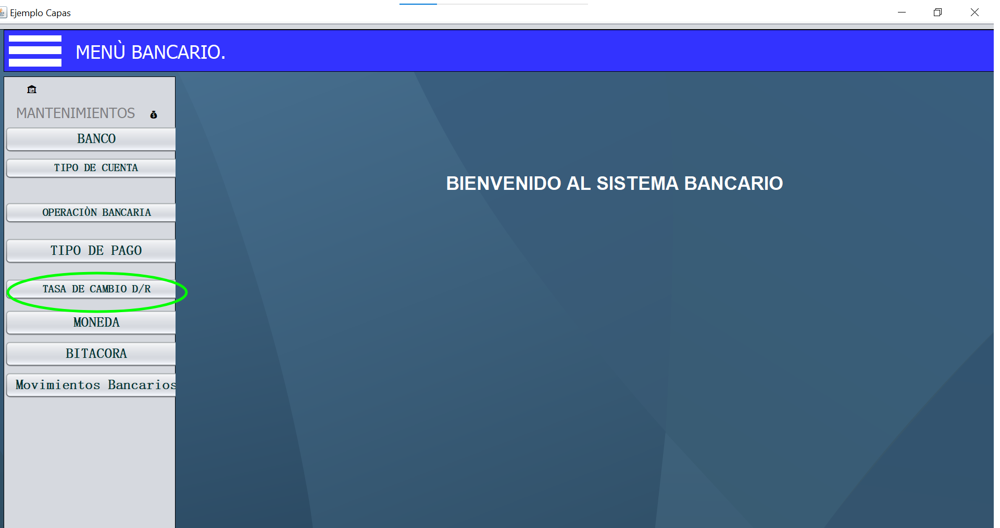
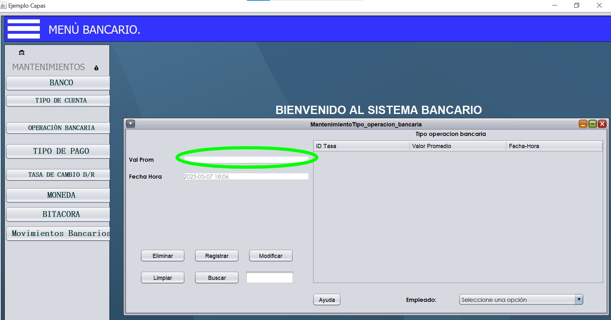
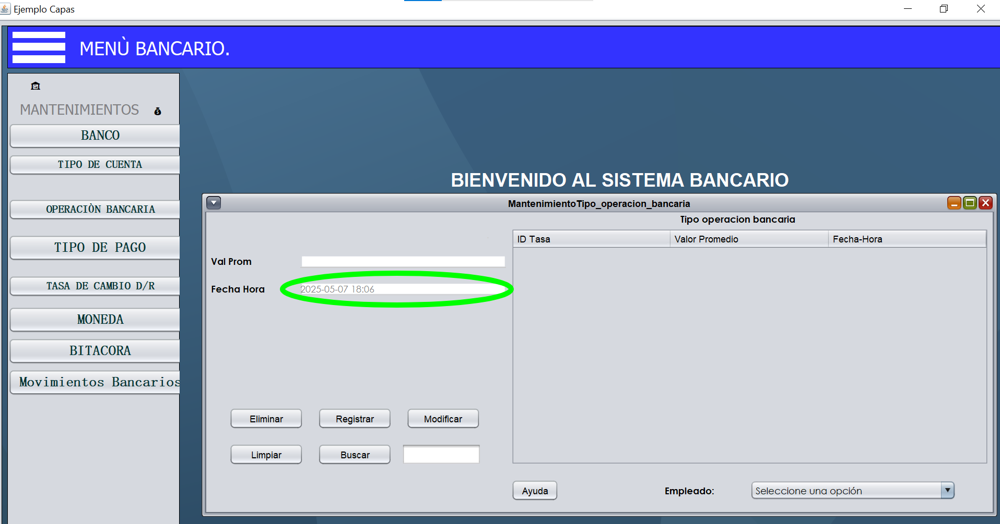
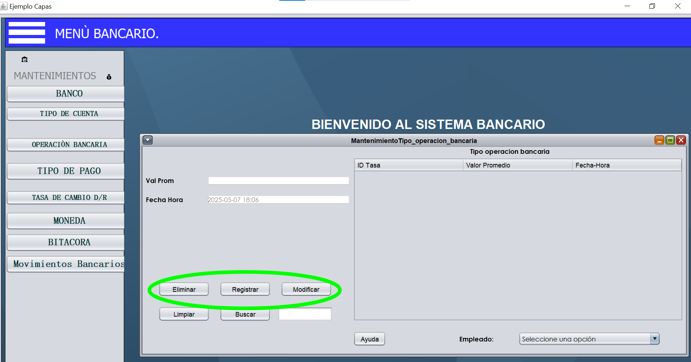
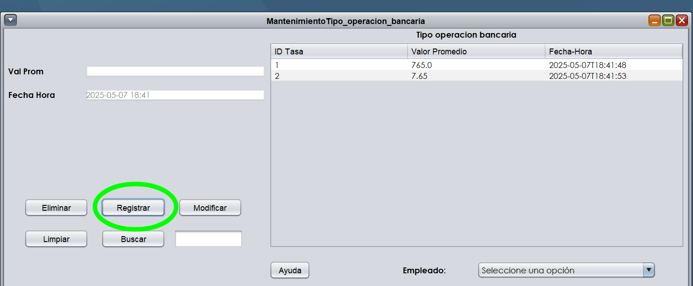
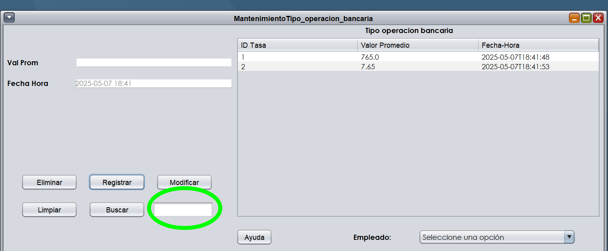
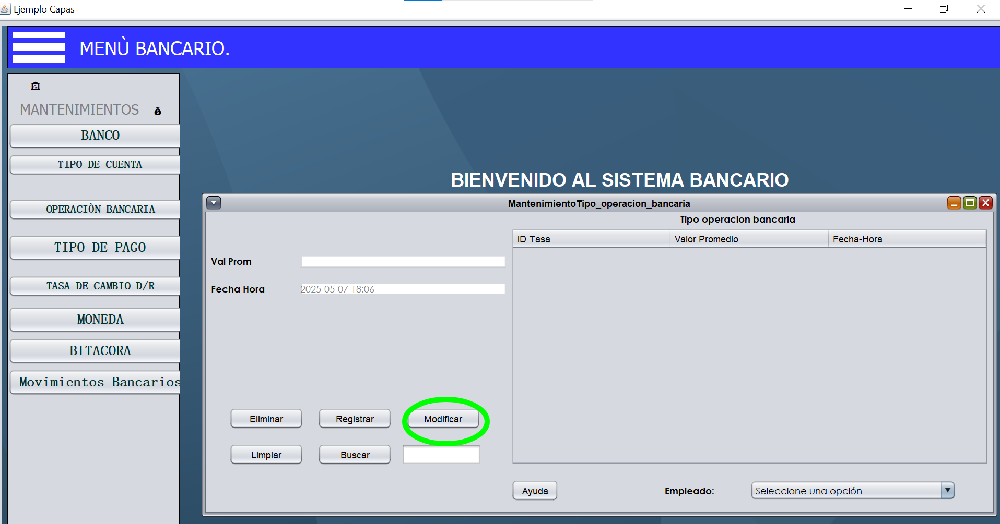
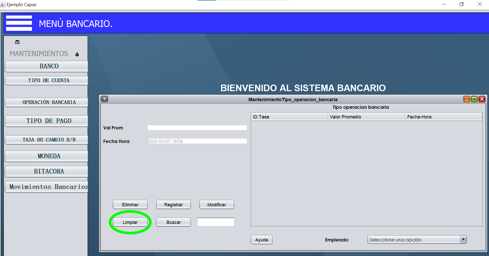
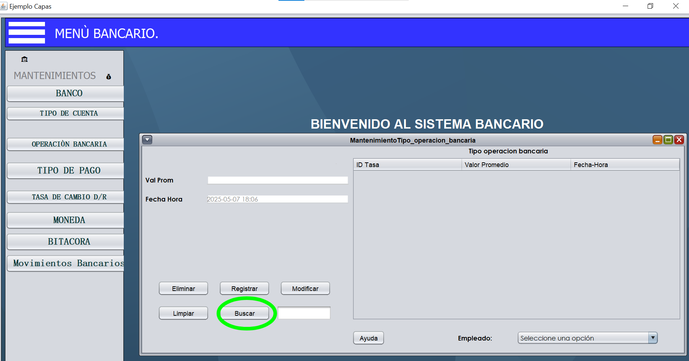
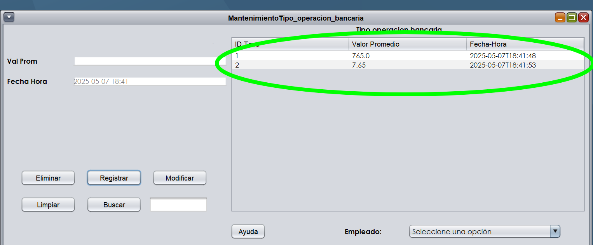

Este proceso tiene como objetivo mostrar los cambios de precio de las divisas, en este caso el quetzal guatemalteco respecto al dólar estadounidense. Para ello debemos dirigirnos al menú de Mantenimientos y luego seleccionar la opción "Tasa de cambio diario".
El formulario contiene dos campos principales: uno para el valor de la moneda nacional (quetzales) y otro para la fecha y hora del tipo de cambio.
El primer campo acepta valores numéricos con punto decimal, que representan el valor actual del quetzal respecto a 1 USD. Por ejemplo, puedes ingresar 7.65
Debes ingresar la fecha en que se registra el tipo de cambio. Por defecto, si no ingresas nada, el sistema tomará la fecha actual. Además, el campo muestra una guía en letras grises sobre el formato requerido.
Todos los botones se activan haciendo clic sobre ellos y realizan diferentes acciones en el sistema.
Después de ingresar los valores requeridos, este botón registra el nuevo tipo de cambio en el sistema. Si no se especifica una fecha manualmente, usará la fecha actual automáticamente.
Para usar este botón, primero debes:
1. Ingresar o buscar el registro que deseas eliminar
2. Una vez que el sistema muestre el registro, haz clic en "Eliminar" para borrarlo permanentemente
Para modificar un registro existente:
1. Primero debes buscar el registro que deseas actualizar
2. Luego edita los campos que necesites cambiar
3. Finalmente, haz clic en "Modificar" para guardar los cambios. El sistema te mostrará un mensaje de confirmación.
Este botón borra todos los campos del formulario, permitiéndote comenzar desde cero sin necesidad de cerrar y volver a abrir la ventana.
Para buscar un registro específico:
1. Ingresa los criterios de búsqueda en este caso solo acepta valores enteros numericos que existan
2. Haz clic en "Buscar" para que el sistema muestre los resultados dentro de los cuadros correspondientes a moneda y su fecha correspondiente
Los registros encontrados aparecerán en la tabla inferior, donde podrás seleccionarlos para modificarlos o eliminarlos.
Esta tabla muestra todos los registros de tipos de cambio encontrados en las búsquedas. Desde aquí puedes seleccionar cualquier registro para editarlo o eliminarlo.
